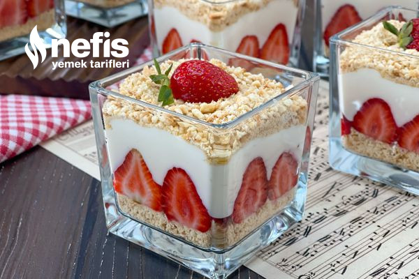

...Magnolia...
Ünü New York pastanelerinden dünyaya yayıldıktan sonra, özellikle günümüzde popülerliği artan bu tatlıya, ülkemizde oldukça fazla ilgi gösteriliyor. Yapımında un, bebe bisküvisi, krema ve meyve kullanılıyor. Bu tarifin birbirinden farklı malzemeleri kullanarak yapılan çeşitleri bulunuyor.
Tarif:Elif Atalar
Kaç Kişilik:4 Kişilik Hazırlanma Süresi: 1 Saat Pişirme Süresi: Yok
Magnolia İçin Malzemeler
- Süt
- Un
- Krema
- Şeker
- Vanilya
- Yumurta
- Fındık
- Cicibebe
- Çilek
Nasıl Yapılır?
- Magnolianın muhallebisi için uygun bir tencereye süt, toz şeker, un, yumurta ve sıvı kremayı alalım.
- Muhallebi koyulaşıp göz göz oluncaya kadar karıştırarak pişirelim ve ardından ocağı kapatalım.
- Muhallebimiz beklerken üzerini streç filmle kapatalım. Böylelikle üzerinin kabuklanmasını engellemiş oluruz.
- Diğer taraftan bebe bisküvisi ve kavrulmuş fındığı rondoya alalım ve hızlıca rondodan geçirelim.
- Ardından kuplarımızın kenarlarına dilimlenmiş çilekleri yerleştirelim.
- Çilekleri sıraladıktan sonra muhallebiyi kuplara paylaştıralım. Muhallebinin üzerini de yine kaşığın arka tarafı ile düzeltelim.
- Son olarak muhallebinin üzerine tekrardan hazırladığımız fındıklı bisküvi karışımından yerleştirelim. Magnoliamızın üzerini dilimlenmiş çilekle süsleyelim.
Bu şekilde tatlılarımızı en az 2-3 saat kadar buzdolabında dinlendirdikten sonra çilekli magnolialarımız servise hazır. Afiyet olsun!
